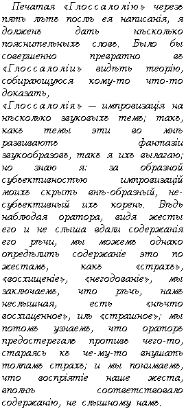
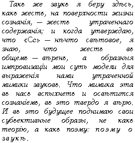
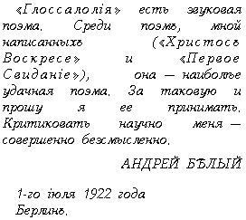

Glossolalia (Preface)
GLOSSOLALIA

In publishing Glossolalia five years after it was written, I must provide a few words of clarification. It would be absolutely incorrect to see in Glossolalia a theory intended to prove something to someone.
Glossolalia is an improvisation on several sound themes; just as these themes develop phantasies of sound-images inside of me, so do I lay them out; but I know that behind the figurative subjectivity of my improvisations is concealed their beyond-the-figurative, non-subjective root. Indeed, when we observe a speaker, seeing his gestures but not hearing the content of his speech from a distance, we can nonetheless determine this content by his gestures, such as "fear," "enchantment," "dissatisfaction"; we conclude that the speech, which we have not heard, is "something enchanting," or "frightful"; later we learn, that the speaker had been warning us about something, trying to arouse a sense of fear in the crowd toward something; and we comprehend that our perception of the gesture corresponds perfectly to the content that we did not hear.

In just the same way here I take a sound, as a gesture, on the surface of the life of consciousness, -- it is a gesture of lost content; and when I assert, that "Ss" is -- something luminous, I know that the gesture in general is -- a faithful one, and my figurative improvisations are models for the expression of a mimicry of sounds that we have lost. I firmly believe that this mimicry will ignite inside of us and be illuminated by our consciousness. And it is to this future that I raise my subjective images, not as a theory, but as a poem: a poem about sound.

G l o s s o l a l i a is a sound poem. Amidst the poems which I have written ("Christ has Risen" and "The First Encounter"), it is the most successful one. I ask that you accept it as such. To criticize me from a scholarly point of view is -- absolutely ridiculous.
ANDREI BELY
Berlin.